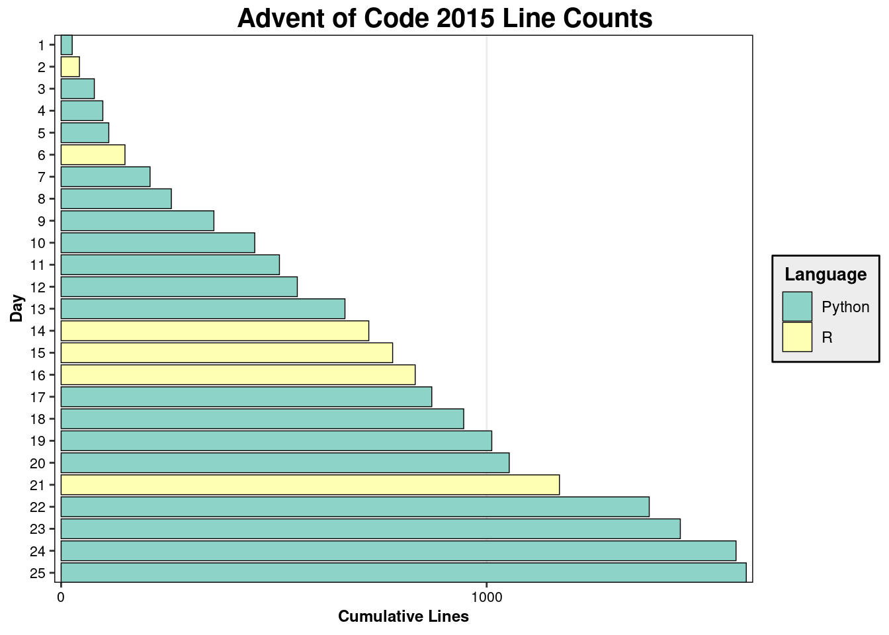
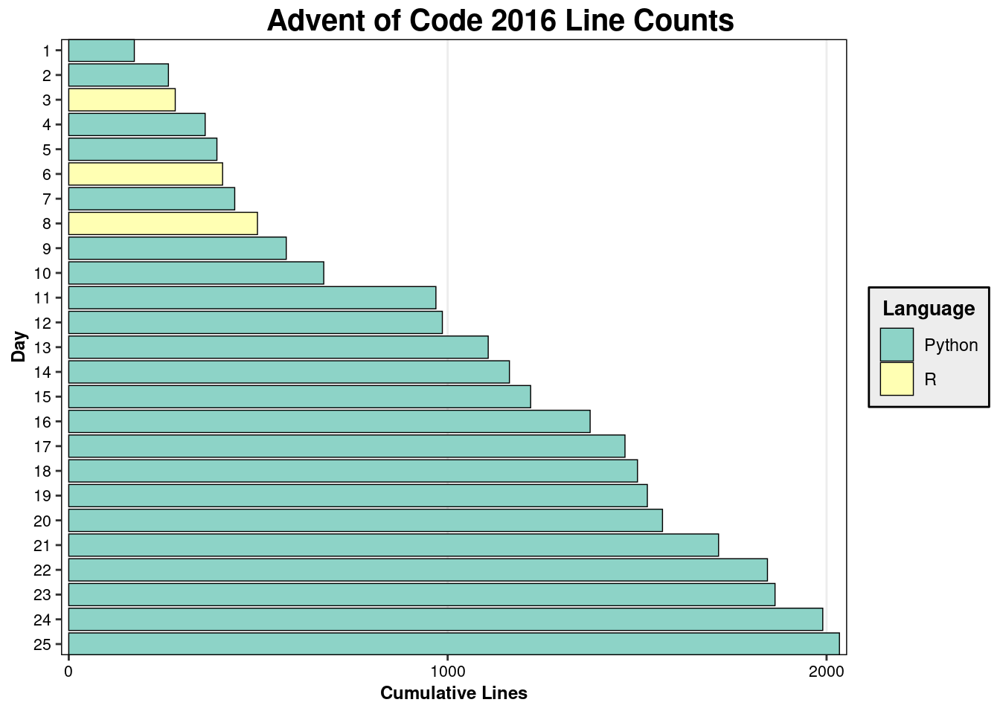
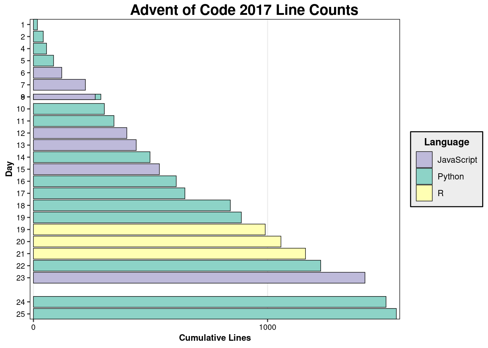
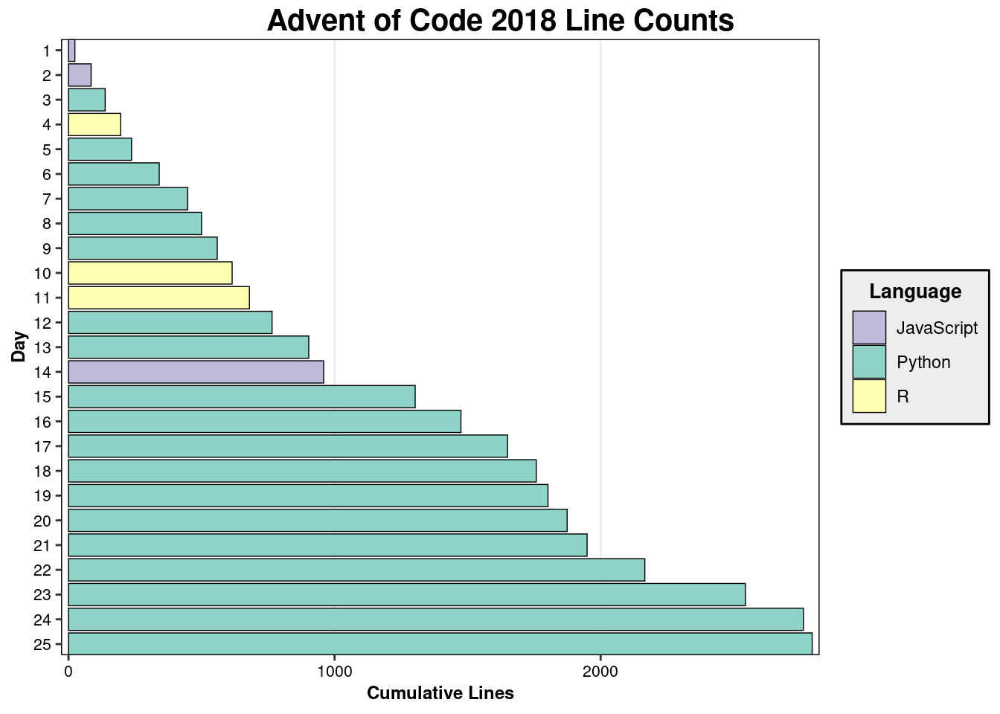
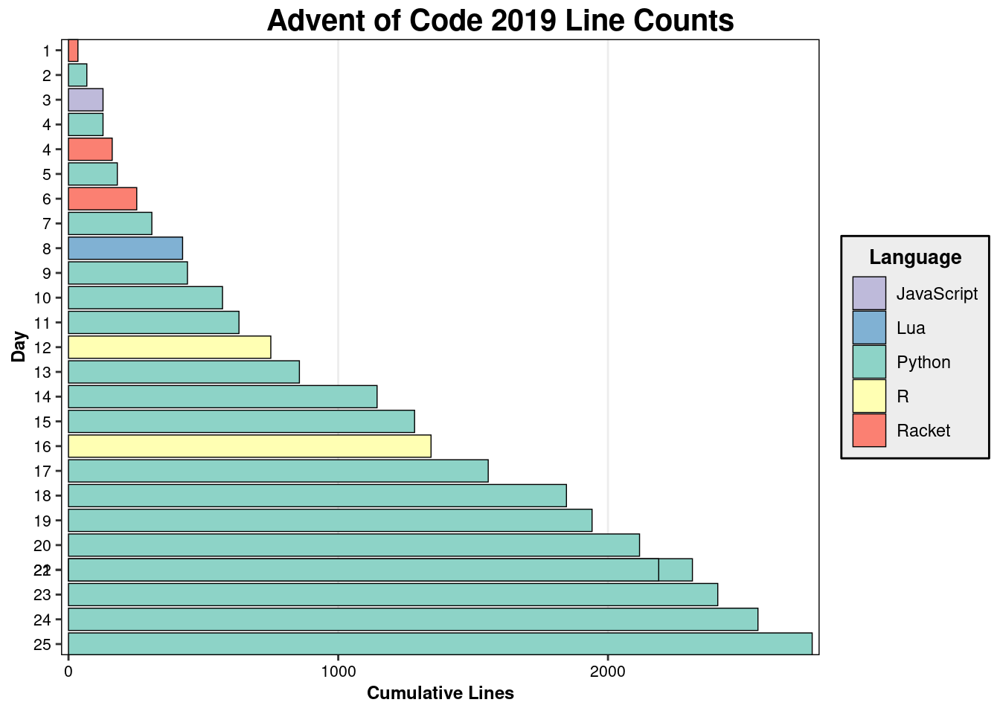
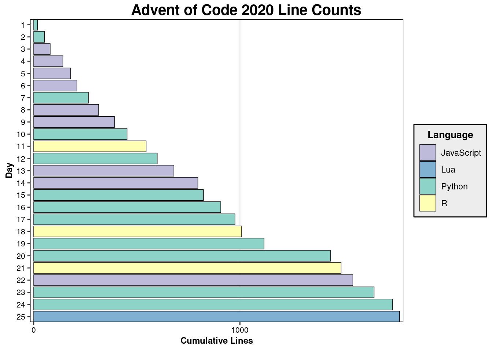
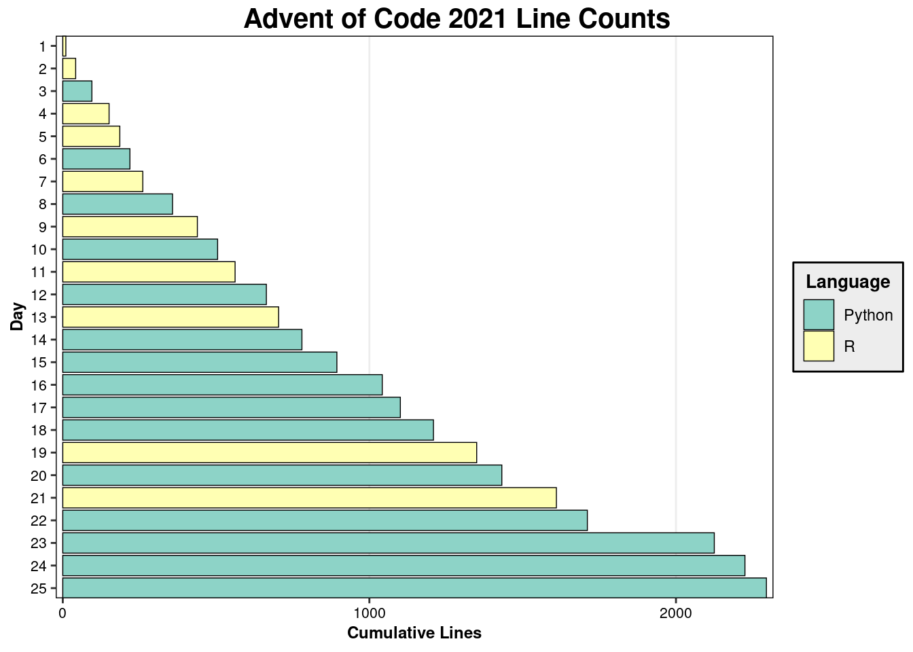
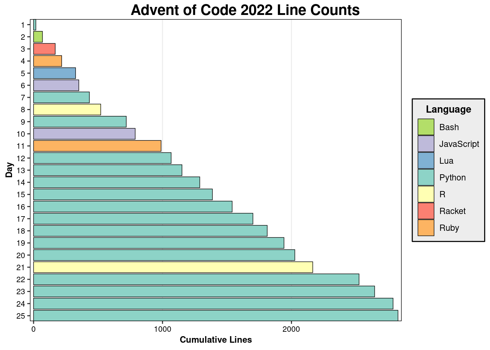

source_env <- new.env()
source_env$years <- 2015:2022
source_env$csv <- "../../data/line_counts.csv"
source("../../scripts/plot_lines.R", local = source_env)







Ryan Heslin
May 1, 2023
At long last, I’ve earned all 400 stars available in Advent of Code. I have implemented every possible variation of Dijkstra’s algorithm. I have spent hours scouring the subreddit for help threads tagged “[20XX Day YY].” I have become a lot more acquainted with the Python debugger than I would like. I don’t regret that considerable investment of time, so I thought it would be worthwhile to reflect on it.
I started participating in Advent of Code in 2020, shortly after entering a data science master’s program. Since then, I’ve found myself returning to it whenever I have free time. The appeal of the puzzles never seems to dull.
When I began the final effort to “finish Advent of Code”, most of my backlog consisted of 2017 through 2019, plus some unfinished puzzles from 2020. At first, I did the puzzles roughly in order, year by year. Midway through 2019, when the difficulty began to ramp up, I diverted to 2018. I did the final, hardest puzzles out of sequence.
This was a long journey, undertaken in fits and starts the time I could spare over the past two and a half years. Some puzzles I tore through in a few minutes, almost without thinking; many took hours of effort. A few took days of attempts to crack. While I sometimes felt frustration, I enjoyed most of the process, and nothing dimmed my determination to finish.
Naturally, a few puzzles became my favorites:
2018 Day 23. It presents a simple but very hard problem: find the nearest point in a vast three-dimensional space that falls within the greatest number of octohedra (the shape formed by defining a center and a radius measured by Manhattan distance). After some research, I solved it using octary search - a three-dimensional generalization of binary search.
2020 Day 20. This puzzle, the notorious “Jurassic Jigsaw,” involves reassembling a grid of tiles into an image and finding a complex pattern within it. I found it very hard, but quite satisfying, to recover the image using a variation of depth-first search.
2018 Day 22. A fun variation on the well-worn graph traversal format. In this puzzle, the graph represents an unexplored cave the player has to navigate using their equipment.
I had one clear least favorite: 2019 Day 22. Like many people, I found this puzzle almost impossible. It asks you to simulate shuffling a deck of trillions of cards trillions of times. Solving it before the end of our civilization requires subtle modular arithmetic. I could only solve it by following this tutorial. The experience makes me wish I’d taken a course in number theory.
I ought to weigh in on the most controversial puzzle element in the series: Intcode. Featured in the 2019 iteration, Intcode is a made-up CPU language that relies on integer parameters and opcodes. Intcode programs take the form of lists of comma-separated integers. About half of 2019’s puzzles were distributed in this format.
An early puzzle challenges the player to create an Intcode virtual machine and execute a simple program. Later puzzles complicate the Intcode specification and feature more elaborate programs. The player has to update their VM in order to solve them. The final puzzle, in most years a simple exercise, became something special: an interactive adventure game written entirely in Intcode.
Intcode seems to have polarized the community. Some laud it for adding a new type of challenge in requiring the player to design and upgrade a VM. They point out that it powered an exciting new kind of interactive puzzle that allowed the player to control an Intcode program directly. Others object that Intcode was complicated, finicky, and difficult to understand for anyone who hadn’t taken a compilers course (such as yours truly). And the cumulative requirements for the player’s VM made it easy to fall behind.
I agree with both viewpoints. I found it difficult to implement the Intcode VM; the end result worked, but was brittle and complicated. One subtlety within the instructions (the distinction between “relative” and “absolute” parameter modes) cost me a few hours before I found a Reddit post explaining the difference. But it was worth it. I found the later Intcode puzzles fun and inventive. They include simplified versions of Frogger and Breakout - a welcome change of pace from variations on the Game of Life or graph pathfinding. I can see why the experiment wasn’t repeated, but I think Intcode was a success overall, and certainly something that set 2019 apart.
Before I wrap up, here are plots showing cumulative lines of code by language for each year.
I learned a good deal in the process. I got to practice applying Dijkstra’s algorithm, depth-first search, and (yes) modular arithmetic. Intcode, as noted, was a sometimes harsh lesson in how to meet an evolving specification. But I think the most important skill Advent of Code teaches is how to translate convoluted problem statements into code. Much of the fun comes from uncovering the well-posed problem buried in the elaborate elf-related scenario presented by the narrative text. That experience comes in handy in real life, where requirements are rarely so clear.
Above all, I was left with an appreciation for the hard work it must have taken to create Advent of Code. The puzzles often return to the same concepts, but each is unique. And the puzzle text itself is always both a precise problem statement and a continuation of the charmingly silly narrative that ties each year together. The whole experience remains cohesive and rewarding, even hundreds of puzzles in.
What next? I could certainly improve my solutions; some contain dubious hacks or take an uncomfortably long time to run. But I think I’ll find other projects to occupy me - at least until next December, that is.
---
title: "Completing Advent of Code"
author: "Ryan Heslin"
date: "2023-05-01"
categories: ["Advent of Code"]
urlcolor: "blue"
---
At long last, I've earned all 400 stars available in [Advent of Code](https://adventofcode.com/). I have implemented every possible variation of Dijkstra's algorithm.
I have spent hours scouring the [subreddit](https://www.reddit.com/r/adventofcode/) for help
threads tagged "[20XX Day YY]." I have become a lot more acquainted with the
Python debugger than I would like. I don't regret that considerable investment
of time, so I thought it would be worthwhile to reflect on it.
I started participating in Advent of Code in 2020, shortly after entering
a data science master's program. Since then, I've found myself returning to it
whenever I have free time. The appeal of the puzzles never seems to dull.
When I began the final effort to "finish Advent of Code", most of my backlog
consisted of 2017 through 2019, plus some unfinished puzzles from 2020. At first, I did the puzzles roughly in order, year
by year. Midway through 2019, when the difficulty began to ramp up, I
diverted to 2018. I did the final, hardest puzzles out of sequence.
This was a long journey, undertaken in fits and starts the time I could spare over the past
two and a half years. Some puzzles I tore through in a few minutes, almost without
thinking; many took hours of effort. A few took days of attempts to crack.
While I sometimes felt frustration, I enjoyed most of the process, and nothing
dimmed my determination to finish.
Naturally, a few puzzles became my favorites:
* [2018 Day 23](https://adventofcode.com/2018/day/23). It presents a simple
but very hard problem: find the nearest point in a vast three-dimensional
space that falls within the greatest number of octohedra (the shape formed
by defining a center and a radius measured by Manhattan distance).
After some research, I solved it using octary search - a three-dimensional
generalization of binary search.
* [2020 Day 20](https://adventofcode.com/2020/day/20). This puzzle, the notorious
"Jurassic Jigsaw," involves reassembling a grid of tiles
into an image and finding a complex pattern within it. I found it very hard,
but quite satisfying, to recover the image using a variation of depth-first
search.
* [2018 Day 22](https://adventofcode.com/2018/day/22). A fun variation on the
well-worn graph traversal format. In this puzzle, the graph represents an unexplored
cave the player has to navigate using their equipment.
I had one clear least favorite: [2019 Day 22](https://adventofcode.com/2018/day/22).
Like many people, I found this puzzle almost impossible.
It asks you to simulate shuffling a deck of trillions of cards trillions of times.
Solving it before the end of our civilization requires subtle modular
arithmetic. I could only solve it by following [this tutorial](https://codeforces.com/blog/entry/72593). The experience makes me wish I'd taken a course in number theory.
# Intcode
I ought to weigh in on the most controversial puzzle element in the series:
Intcode. Featured in the 2019 iteration, Intcode is a made-up CPU language
that relies on integer parameters and [opcodes](https://en.wikipedia.org/wiki/Opcode).
Intcode programs take the form of lists of comma-separated integers. About half of 2019's puzzles were distributed in this format.
An early puzzle challenges the player to create an Intcode [virtual machine](https://en.wikipedia.org/wiki/Virtual_machine) and execute a simple program. Later puzzles
complicate the Intcode specification and feature more elaborate programs. The player
has to update their VM in order to solve them. The final puzzle, in most years
a simple exercise, became something special: an interactive adventure game
written entirely in Intcode.
Intcode seems to have polarized the community. Some laud it for adding a new type
of challenge in requiring the player to design and upgrade a VM. They point out
that it powered an exciting new kind of interactive puzzle that allowed the player to
control an Intcode program directly. Others object that Intcode was complicated,
finicky, and difficult to understand for anyone who hadn't taken a compilers
course (such as yours truly). And the cumulative requirements for the player's VM
made it easy to fall behind.
I agree with both viewpoints. I found it difficult to implement the Intcode VM;
the end result worked, but was brittle and complicated. One subtlety within
the instructions (the distinction between "relative" and "absolute" parameter modes)
cost me a few hours before I found a Reddit post explaining the difference.
But it was worth it. I found the later Intcode puzzles fun and inventive.
They include simplified versions of [Frogger](https://en.wikipedia.org/wiki/Frogger)
and [Breakout](https://en.wikipedia.org/wiki/Breakout_(video_game)) - a welcome
change of pace from variations on the [Game of Life](https://en.wikipedia.org/wiki/Conway%27s_Game_of_Life) or graph pathfinding. I can see why the experiment
wasn't repeated, but I think Intcode was a success overall, and certainly
something that set 2019 apart.
Before I wrap up, here are plots showing cumulative lines of code by language for
each year.
```{r}
source_env <- new.env()
source_env$years <- 2015:2022
source_env$csv <- "../../data/line_counts.csv"
source("../../scripts/plot_lines.R", local = source_env)
```
# Last Thoughts
I learned a good deal in the process. I got to practice applying
[Dijkstra's algorithm](https://en.wikipedia.org/wiki/Dijkstra%27s_algorithm),
depth-first search, and (yes) modular arithmetic. Intcode, as noted, was
a sometimes harsh lesson in how to meet an evolving specification. But I think
the most important skill Advent of Code teaches is how to
translate convoluted problem statements into code. Much of the fun comes from uncovering the
well-posed problem buried in the elaborate elf-related scenario presented by the
narrative text. That experience comes in handy in real life, where
requirements are rarely so clear.
Above all, I was left with an appreciation for the hard work it must have taken to
create Advent of Code. The puzzles often return to the same concepts, but
each is unique. And the puzzle text itself is always both a precise problem
statement and a continuation of the charmingly silly narrative that ties
each year together. The whole experience remains cohesive and rewarding,
even hundreds of puzzles in.
What next? I could certainly improve my solutions; some contain dubious hacks or take an uncomfortably
long time to run. But I think I'll find other projects to occupy me - at
least until next December, that is.